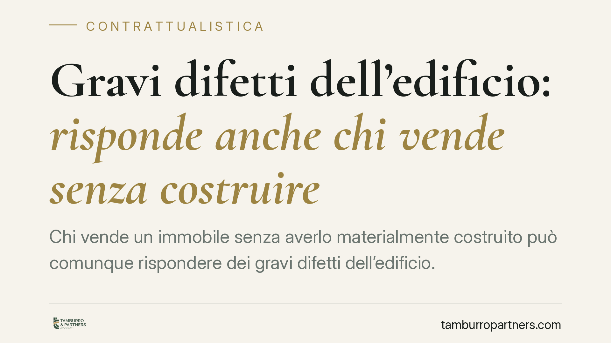

Gravi difetti dell'edificio: risponde anche chi vende senza costruire
Chi vende un immobile senza averlo materialmente costruito può comunque rispondere dei gravi difetti dell'edificio. La Cassazione valorizza gli indici di direzione e controllo sul cantiere per estendere la responsabilità ex art. 1669 c.c. al venditore-costruttore. Un principio che incide su acquirenti, venditori e appaltatori, ridisegnando la catena delle responsabilità nell'edilizia.

Il caso e il principio
La questione è ricorrente nel contenzioso edilizio: un immobile viene alienato da un soggetto che non ha impugnato materialmente gli strumenti di cantiere, ma che ha affidato l'esecuzione a un appaltatore. Emergono gravi difetti. L'acquirente può agire solo contro l'impresa esecutrice, oppure anche contro il venditore?
La Corte di Cassazione ha ribadito che la responsabilità dell'art. 1669 del codice civile può estendersi anche al venditore che non ha costruito con le proprie mani, quando ha mantenuto la direzione e il controllo effettivo sull'opera. Non conta chi ha posato i mattoni, ma chi ha governato il processo costruttivo.
> Nota redazionale: il riferimento all'ordinanza citata dalla fonte reca un'annualità (2026) che richiede verifica sull'estratto ufficiale prima di ogni utilizzo processuale. Il principio di diritto, invece, è consolidato nella giurisprudenza di legittimità.
Inquadramento normativo
L'art. 1669 c.c. disciplina la responsabilità per rovina e gravi difetti di immobili destinati a lunga durata. Il costruttore risponde quando l'opera, entro dieci anni dal compimento, rovina in tutto o in parte, ovvero presenta pericolo di rovina o gravi difetti.
La disciplina dei termini è scandita in tre passaggi che vanno tenuti distinti:
- l'opera deve manifestare il difetto entro dieci anni dal compimento;
- il committente o l'acquirente deve denunciare il difetto entro un anno dalla scoperta;
- l'azione deve essere esercitata entro un anno dalla denuncia.
La perdita anche di uno solo di questi termini preclude la tutela. Quanto alla natura dell'art. 1669 c.c., le Sezioni Unite (Cass. SU n. 7756/2017) l'hanno qualificata come responsabilità di natura extracontrattuale, di ordine pubblico, posta a tutela dell'incolumità e della stabilità degli edifici. È qualificazione autorevole, benché il dibattito dottrinale non sia del tutto sopito.
Chi è il "venditore-costruttore"
Il punto decisivo è quando il venditore assume la veste sostanziale di costruttore. La giurisprudenza valorizza indici concreti di ingerenza nell'opera:
- la predisposizione o l'appropriazione del progetto;
- la nomina del direttore dei lavori riconducibile alla sua sfera;
- le prescrizioni tecniche vincolanti impartite all'appaltatore in corso d'opera.
Quando questi elementi ricorrono, il venditore non è un mero intermediario immobiliare: ha esercitato quel controllo che giustifica l'estensione della responsabilità decennale. La forma contrattuale scelta (appalto a terzi) non lo sottrae al regime dell'art. 1669 c.c.
Implicazioni pratiche
Per l'acquirente si allarga il novero dei soggetti chiamati a rispondere: non solo l'impresa esecutrice, ma anche il venditore che ha diretto il cantiere. È una tutela più solida, soprattutto quando l'appaltatore è insolvente o cessato.
Per il venditore-costruttore il messaggio è netto: aver appaltato l'esecuzione non basta a escludere la responsabilità. Le clausole di manleva verso l'appaltatore restano valide nei rapporti interni, ma non sono opponibili all'acquirente, che agisce sulla base di una responsabilità di ordine pubblico. In altri termini, il venditore paga verso l'acquirente e poi potrà rivalersi sull'impresa.
Per l'appaltatore permane la responsabilità propria e la possibile azione di regresso da parte del venditore condannato.
Cosa fare in concreto
Se sei l'acquirente:
- Documenta i difetti con perizia tecnica e datala rispetto alla scoperta.
- Denuncia i gravi difetti entro un anno dalla scoperta e agisci entro l'anno successivo dalla denuncia.
- Verifica il ruolo effettivo del venditore: progetto, direzione lavori, prescrizioni impartite.
Se sei il venditore-costruttore:
- È opportuno ricostruire per tempo la catena documentale del cantiere e conservare progetto, incarichi e verbali.
- Inserisci clausole di manleva verso l'appaltatore, consapevole che valgono nei rapporti interni e non verso l'acquirente.
Se sei l'appaltatore:
- Conserva la documentazione esecutiva e le eventuali contestazioni sulle prescrizioni ricevute, utili in sede di regresso.
Disclaimer
Contributo informativo a cura di Tamburro & Partners Avvocati - Avv. Giuseppe Tamburro. Non costituisce parere legale.
Ogni contratto ha il suo equilibrio.
Se vuoi una revisione delle clausole o una redazione su misura, scrivi allo studio. Ti rispondiamo entro un giorno lavorativo.